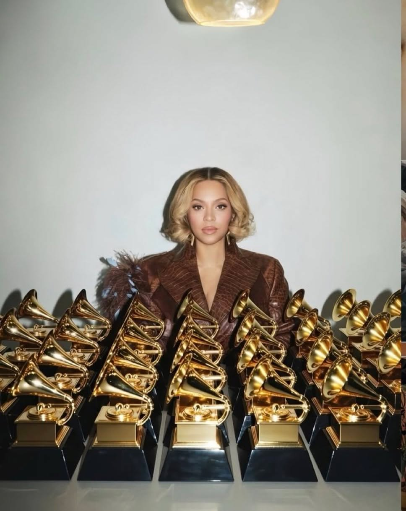
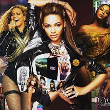

Ipinanganak sa Houston, Texas, si Beyoncé Giselle Knowles-Carter ay nagsimula ng karera sa musika noong bata pa siya. Noong 1997, sumikat siya bilang bida ng Destiny's Child – isa sa pinakamabentang girl group sa kasaysayan, na nagbida ng mga hits tulad ng 'Say My Name' at 'Independent Women Part I'.
Nang mag-launch ng solo career, nagbida siya ng mga album tulad ng Dangerously in Love, B'Day, at 4 – may mga hits na 'Crazy in Love', 'Single Ladies (Put a Ring on It)', at 'Halo'. Nanalo siya ng 32 Grammy Awards, ginawang pinakamaraming parangal na nanalo na artista sa kasaysayan ng Grammy.
Sa album na Lemonade (2016) at Renaissance (2022), binigyang-diin ni Beyoncé ang kanyang kultura at pagiging Black woman. Itinatag din niya ang BeyGOOD Foundation para tumulong sa mga nangangailangan, at itinataguyod niya ang pantay na karapatan at empowerment ng kababaihan.
Iconic Albums & Projects
Isang plataporma na nakatuon sa pagpapahalaga sa buhay at trabaho ni Beyoncé – isang icon na muling hinubog ang musika, kultura, at lipunan. Layunin namin na ipakita ang kanyang mga tagumpay sa sining, gawain para sa pagbabago, at impluwensya sa mga henerasyon ng tagahanga.
Sa pamamagitan ng platapormang ito, nais naming magbigay ng inspirasyon at ipakita kung paano patuloy siyang nagdudulot ng positibong pagbabago sa mundo.

May mga tanong ka ba o nais mong malaman pa tungkol sa trabaho ni Beyoncé? Huwag kang mahiyang makipag-ugnayan!